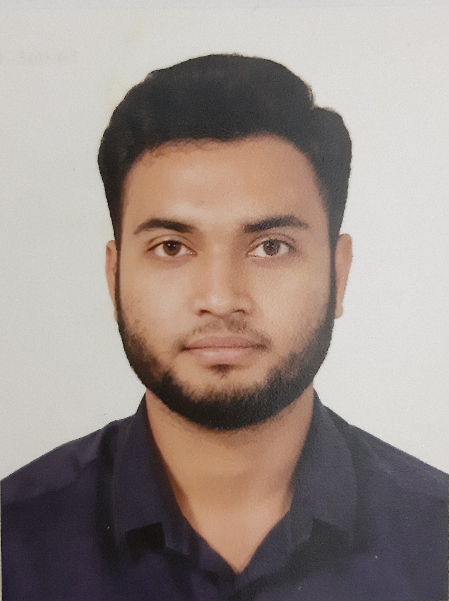

MY PROJECT
I am Rofiqul Islam Niloy, I am studies B.sc in Computer Science and Engineering at Daffodil International University. I'm a software developer and computer programmer with an avid interest in Data Structures and Algorithms. As a Software Developer, I love taking challenges and love being part of the solution.